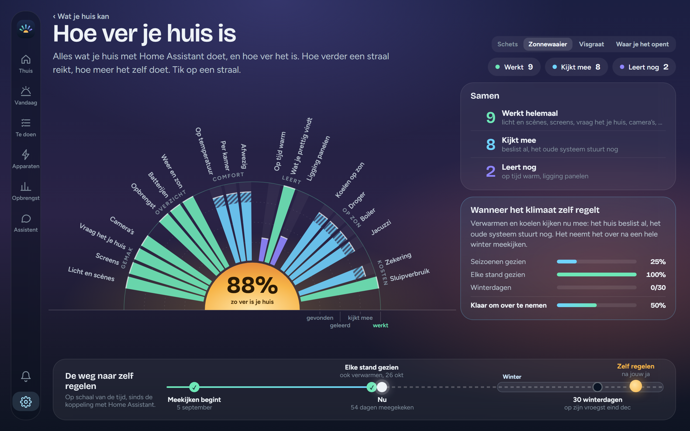
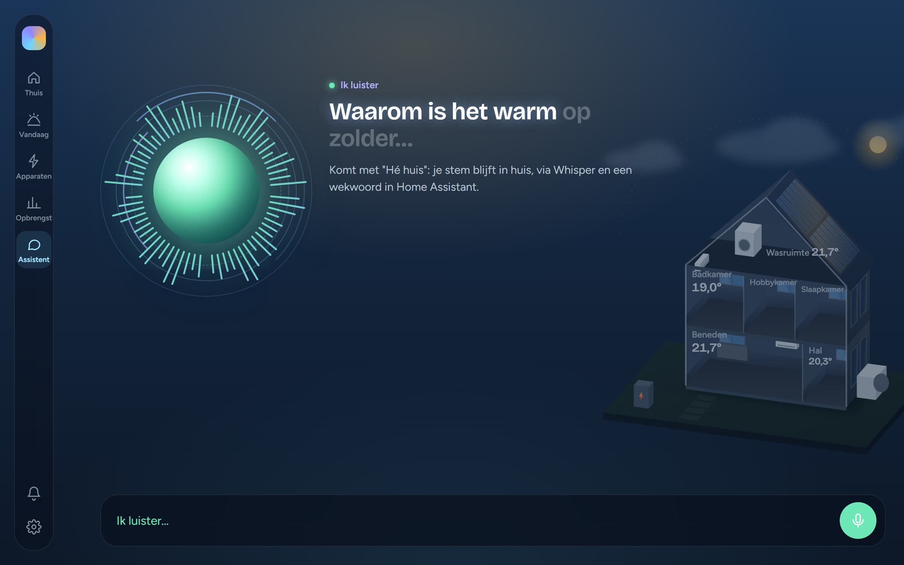
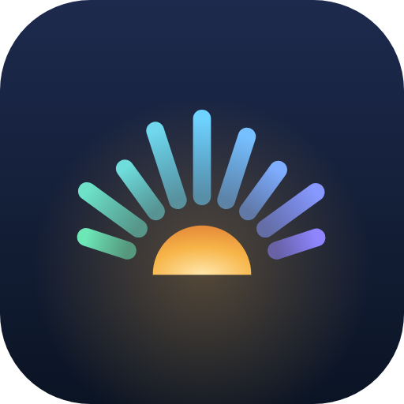

SunArcDe zon in het midden, en arc: de boog van de waaier. ARC staat voor Autonomous Residential Climate, een huis dat zijn klimaat zelf regelt.
Een zon die opkomt boven je huisZoals de zonnewaaier: de zon op de horizon, en elke straal is iets wat je huis doet.
Werkt, kijkt mee, leertVan links naar rechts mint, ijs en violet: dezelfde drie kleuren als in de app, in dezelfde volgorde.
Ongelijke stralenNiet elke straal is even ver, net als in je huis. Daardoor kunnen ze ook bewegen: dan is het de stem van de assistent.
Waar het vandaan komt
Het teken is geen nieuw plaatje naast de app. Het is de zonnewaaier van Hoe ver je huis is, teruggebracht tot negen stralen, en de ring van de assistent als hij luistert.

Hoe ver je huis is
→
Het logo
→

De assistent luistert
Groot en klein
Vanaf 48 pixels negen stralen. Kleiner worden het er vijf, dikker en zonder gloed, zodat het op 16 pixels nog een zon is en geen vlek.
In pixels. 32 en kleiner: vijf stralen.
Waar je het ziet
Het icoon op je telefoon, bovenaan de zijbalk van de app, en in de winkel van Home Assistant. Daar heeft de add-on nu nog geen eigen icoon.
Op je startscherm, tussen andere apps
Zijbalk van de app
Waar nu het gekleurde vierkantje staat. Wand en telefoon.
Winkel van Home Assistant
SunArcAutonomous Residential Climate
icon.png, 128 × 128
Kop van de add-on
SunArc
logo.png, 250 × 100
Naast elkaar en licht
SunArc
SunArc
De stralen als stem van de assistent
Dezelfde zon, dezelfde negen stralen. Ze bewegen anders per moment, zodat je zonder te lezen ziet wat de assistent doet. Ze lopen hier echt.
Wacht
De stralen ademen langzaam. Zo staat hij op de tab Assistent.
Luistert
Elke straal volgt je stem, zoals een equalizer.
Denkt na
Een golf loopt van links naar rechts over de stralen, en weer terug.
Praat
De stralen springen op de lettergrepen; de zon gloeit mee.
Of rond, voor de assistent
Op de pagina Assistent is de hele zon te zien, met de stralen rondom, waar nu de groene bol staat. Het logo blijft de halve zon op de horizon; de assistent is dezelfde zon, maar dan helemaal op.
Wacht
Luistert
Denkt na
Praat
● Ik luister
Waarom is het warm op zolder…
● Hé huis
De zon staat sinds twee uur op het dakraam. De screen gaat om drie uur dicht.
Naast het icoon van nu

Een huisje: dat hebben heel veel apps
Het verloop zegt niets over wat de app doet
Alleen van deze app: de zon, de stralen, de drie kleuren
Hetzelfde teken in de app, op het icoon en bij de assistent